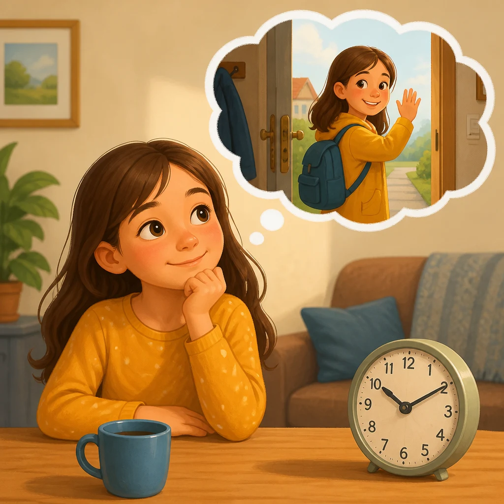
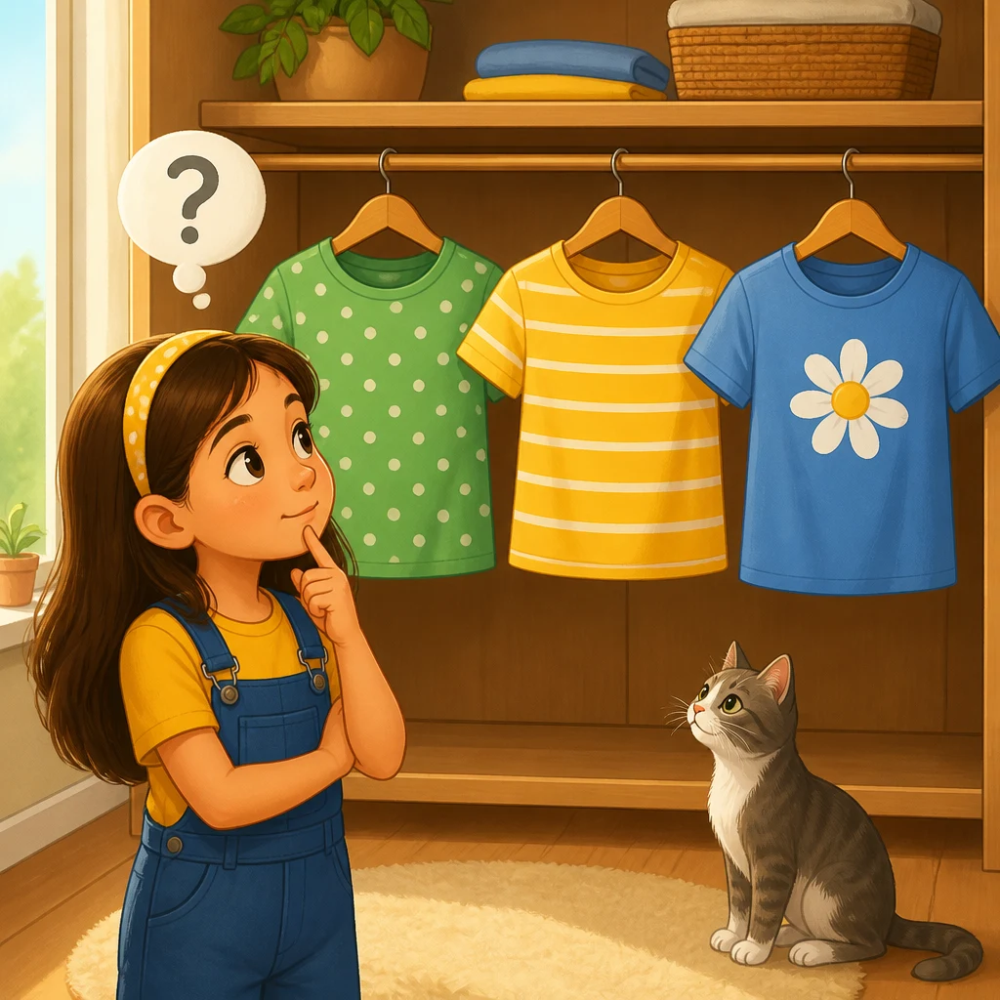
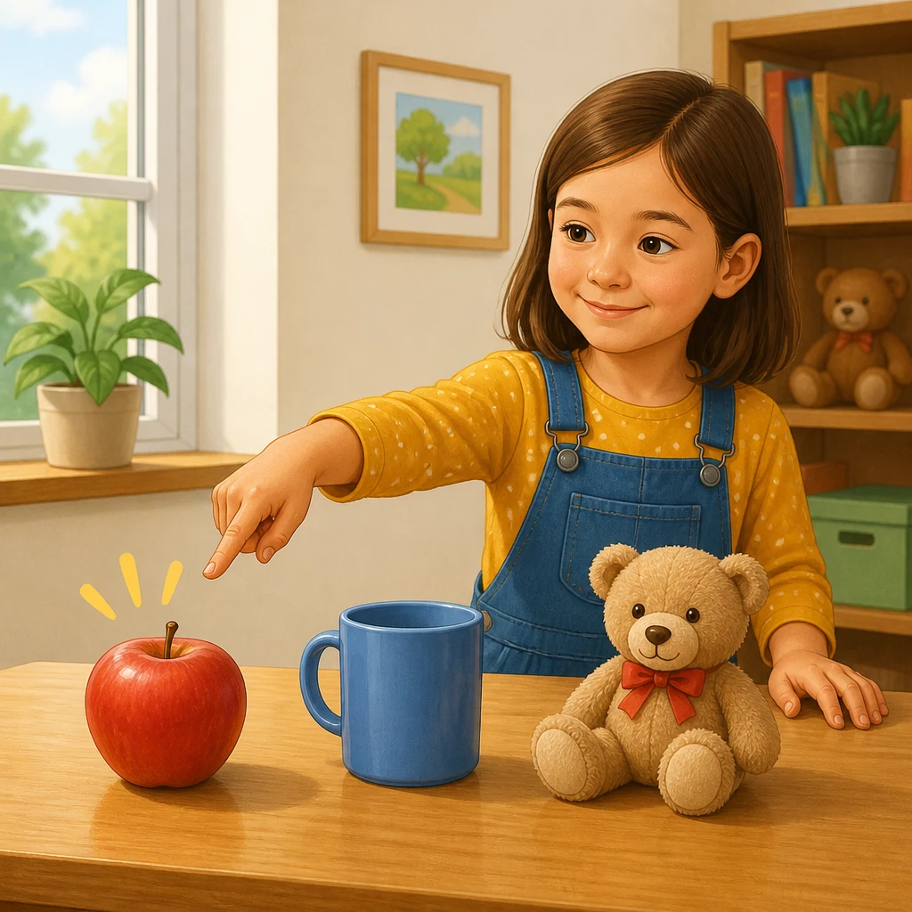
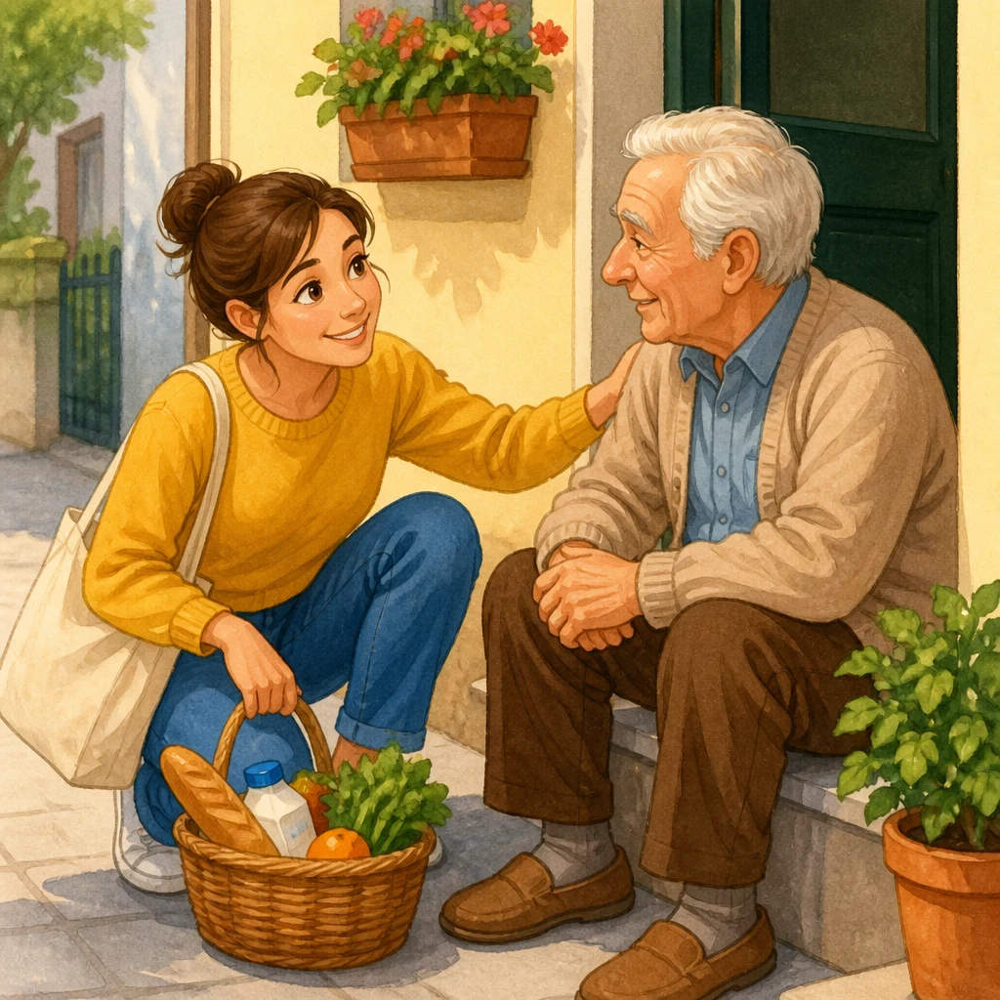
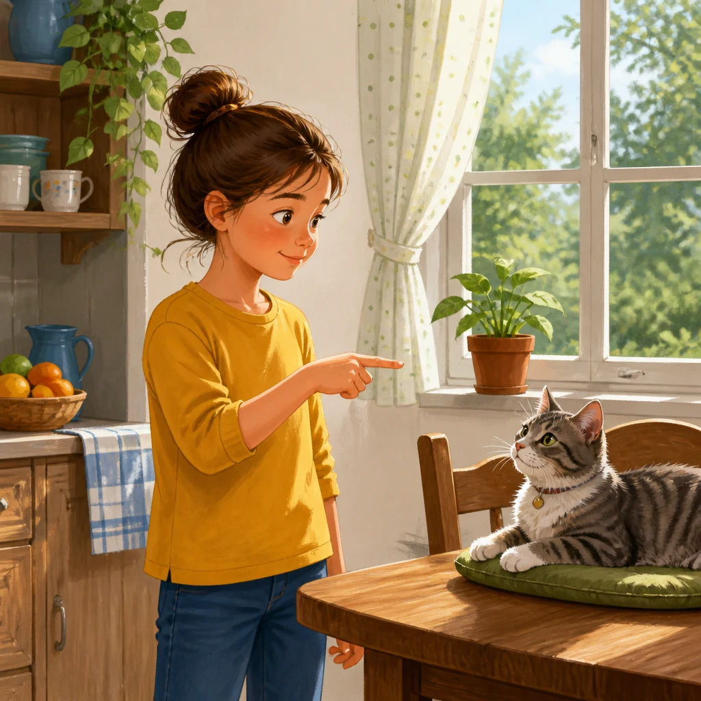
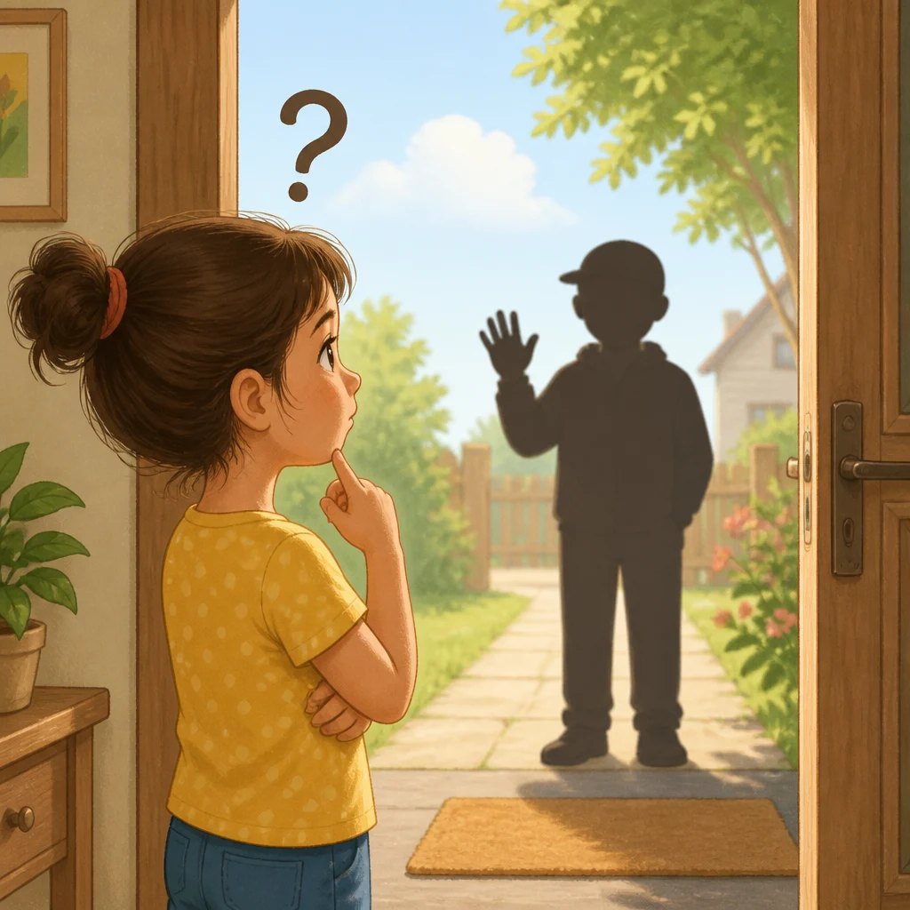
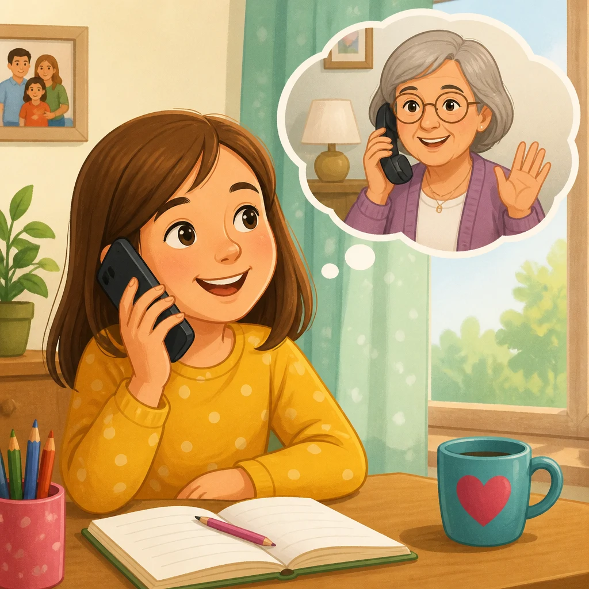

| Preview | File | Size | Words | Czech meanings | Status |
|---|---|---|---|---|---|
 |
beforeawhile.webp |
108.3 kB | poco fa | před chvílí | generated |
 |
which.webp |
124.6 kB | quale / che | který / jaký, který | generated |
 |
this.webp |
148.1 kB | questo | tento | generated |
russian.webp |
218.0 kB | russo | Rus, ruský | generated | |
 |
likeable.webp |
240.1 kB | simpatico | sympatický | generated |
surprise.webp |
109.2 kB | sorpresa | překvapení | generated | |
 |
findoneself.webp |
147.0 kB | trovarsi | nacházet se, být | generated |
wine.webp |
162.1 kB | vino | víno | generated | |
 |
who.webp |
103.3 kB | chi | kdo | generated |
 |
mynamecall.webp |
149.8 kB | chiamare | jmenovat se, volat, telefonovat | generated |